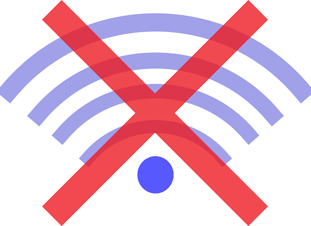

We believe security software like Kicksecure needs to remain Open Source and independent. Would you help sustain and grow the project? Learn more about our 14 year success story and maybe DONATE!
Browsing Kicksecure Documentation Offline

Reading documentation without an internet connection.
Installation
Install package(s) git following these instructions:
1 Platform specific notice.
- Kicksecure: No special notice.
- Kicksecure-Qubes: In Template.
2 Update the package lists and upgrade the system.
sudo apt update && sudo apt full-upgrade
3
Install the git package(s).
Using apt command line --no-install-recommends option is in
most cases optional.
sudo apt install --no-install-recommends git
4 Platform specific notice.
- Kicksecure: No special notice.
- Kicksecure-Qubes: Shut down Template and restart App Qubes based on it as per Qubes Template Modification.
5 Done.
The procedure of installing package(s) git is
complete.
mkdir ~/Downloads/
cd ~/Downloads/
Use git to download the Kicksecure wiki
documentation.
git clone --depth=1 https://gitlab.com/kicksecure/kicksecure-wiki-html.git
Usage
x-www-browser ~/Downloads/kicksecure-wiki-html/Documentation.html
Advantages
- Very fast to browse once installed.
- Improved privacy.
Warnings
 Warning: Intended for users who want to avoid internet
connections.
Warning: Intended for users who want to avoid internet
connections.
No special measures were taken to enforce avoiding internet use. When clicking external links, an internet connection will be used. Browsing offline documentation pages might result in external internet connections. If external content must not be loaded, disable networking of the virtual machine or the host computer.
 Offline documentation will likely be older than online documentation.
For time sensitive issues such as version numbers, refer to the online
version.
Offline documentation will likely be older than online documentation.
For time sensitive issues such as version numbers, refer to the online
version.
Limitations
- Some links might be broken.
- Large image view is broken.
- Simple code boxes. One has to manually select the contents of a code box for copy and paste.
- Boxes for "click on Expand on the right" are already expanded by default.
- Layout and tables look a bit different.
- Other imperfections.
Forum Discussion
https://forums.whonix.org/t/offline-documentation-discussion/413/89
Wiki Database Dump
Using wiki database dumps requires skills in installing and running MediaWiki. This is unspecific to Kicksecure and unsupported.
A) Kicksecure
wiki as mediawiki XML database dump not including
full history dumpContent.xml but including all wiki
images
- Using
giton GitLab. - Ugly binary file.
- Restoration is possible in a new MediaWiki installation.
rsync://kicksecure.com/kicksecure/developer-meta-files/wiki-backup-dump-content-current
B) Kicksecure
wiki as mediawiki XML database dump including full history
but not including wiki images
dumpContent.xml
dumpContent.xml.sha512sum- Not using
gitbecause file size is too big. - Ugly binary file.
- Restoration is possible in a new MediaWiki installation.
rsync://kicksecure.com/kicksecure/developer-meta-files/wiki-backup-dump-content-full
Hints:
- Best to combine the two downloads above (full history B + all wiki images A).
- Possible to rsync from kicksecure.com.
Recommended steps to restore in a new MediaWiki installation:
1) Restore full wiki history.
sudo -u www-data php /var/www/w/maintenance/importDump.php --uploads --dry-run /path/to/wiki-backup-dump-content-full/dumpContent.xml
- Path to MediaWiki maintenance script
importDump.phpwill likely be different. - Drop:
--dry-run - Probably also drop the (likely broken)
--uploadsoption (not important).
2) Restore all wiki images.
sudo -u www-data php /var/www/w/maintenance/importImages.php /path/to/wiki/wiki-backup-dump-content-current/mediafiles
- Path to MediaWiki maintenance script
importImages.phpwill likely be different. - Check permissions. The folder to import from must be readable by the
user www-data. To test, run:
sudo -u www-data cp -r /path/to/wiki/wiki-backup-dump-content-current/mediafiles /tmp/deleteor similar.
Alternative Wiki Backup Formats
These alternative wiki backup formats are intended for archives and developers only.
- C) Kicksecure
wiki as
mediawiki markdown- Nicer looking database format (markdown instead of XML ("binary") database dump).
- No automated path to restoration in MediaWiki. This would probably
have to be automated using
 Kicksecure/mediawiki-shell
or similar.
Kicksecure/mediawiki-shell
or similar. rsync://kicksecure.com/kicksecure/developer-meta-files/kicksecure-wiki-backup
- D) Kicksecure
wiki as
HTML- No automated path to restoration.
Forum Backups
For archives and developers only.
Categories: Documentation